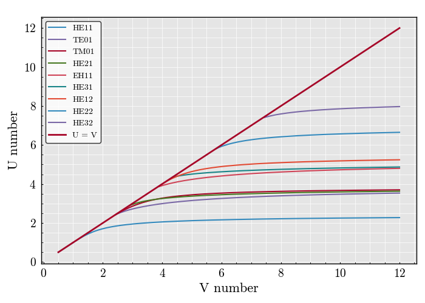

Note
Go to the end to download the full example code
Figure 3.13 of Jacques Bures#
Imports#
import numpy
from PyFiberModes.fiber import get_fiber_from_delta_and_V0
from PyFiberModes import HE11, TE01, TM01, HE21, EH11, HE31, HE12, HE22, HE32
from PyFiberModes.fundamentals import get_U_parameter
from MPSPlots.render2D import SceneList
figure = SceneList(unit_size=(7, 5))
ax = figure.append_ax(
x_label='V number',
y_label='U number',
show_legend=True
)
V0_list = numpy.linspace(0.5, 12, 150)
for mode in [HE11, TE01, TM01, HE21, EH11, HE31, HE12, HE22, HE32]:
data_list = []
for V0 in V0_list:
fiber = get_fiber_from_delta_and_V0(
delta=0.3,
V0=V0,
wavelength=1310e-9
)
data = get_U_parameter(
fiber=fiber,
mode=mode,
wavelength=fiber.wavelength
)
data_list.append(data)
_ = ax.add_line(x=V0_list, y=data_list, label=mode, line_width=1.5)
_ = ax.add_line(x=V0_list, y=V0_list, line_width=2, label='U = V')
_ = figure.show()

WARNING:root:Mode: TE01 cutoff V number: 2.404825557695773 is below the fiber V number: 0.5
WARNING:root:Mode: TE01 cutoff V number: 2.404825557695773 is below the fiber V number: 0.5771812080536913
WARNING:root:Mode: TE01 cutoff V number: 2.404825557695773 is below the fiber V number: 0.6543624161073827
WARNING:root:Mode: TE01 cutoff V number: 2.404825557695773 is below the fiber V number: 0.7315436241610738
WARNING:root:Mode: TE01 cutoff V number: 2.404825557695773 is below the fiber V number: 0.8087248322147651
WARNING:root:Mode: TE01 cutoff V number: 2.404825557695773 is below the fiber V number: 0.8859060402684564
WARNING:root:Mode: TE01 cutoff V number: 2.404825557695773 is below the fiber V number: 0.9630872483221479
WARNING:root:Mode: TE01 cutoff V number: 2.404825557695773 is below the fiber V number: 1.0402684563758389
WARNING:root:Mode: TE01 cutoff V number: 2.404825557695773 is below the fiber V number: 1.1174496644295302
WARNING:root:Mode: TE01 cutoff V number: 2.404825557695773 is below the fiber V number: 1.1946308724832218
WARNING:root:Mode: TE01 cutoff V number: 2.404825557695773 is below the fiber V number: 1.271812080536913
WARNING:root:Mode: TE01 cutoff V number: 2.404825557695773 is below the fiber V number: 1.3489932885906037
WARNING:root:Mode: TE01 cutoff V number: 2.404825557695773 is below the fiber V number: 1.4261744966442953
WARNING:root:Mode: TE01 cutoff V number: 2.404825557695773 is below the fiber V number: 1.5033557046979866
WARNING:root:Mode: TE01 cutoff V number: 2.404825557695773 is below the fiber V number: 1.580536912751678
WARNING:root:Mode: TE01 cutoff V number: 2.404825557695773 is below the fiber V number: 1.657718120805369
WARNING:root:Mode: TE01 cutoff V number: 2.404825557695773 is below the fiber V number: 1.7348993288590606
WARNING:root:Mode: TE01 cutoff V number: 2.404825557695773 is below the fiber V number: 1.812080536912752
WARNING:root:Mode: TE01 cutoff V number: 2.404825557695773 is below the fiber V number: 1.889261744966443
WARNING:root:Mode: TE01 cutoff V number: 2.404825557695773 is below the fiber V number: 1.9664429530201342
WARNING:root:Mode: TE01 cutoff V number: 2.404825557695773 is below the fiber V number: 2.043624161073826
WARNING:root:Mode: TE01 cutoff V number: 2.404825557695773 is below the fiber V number: 2.120805369127517
WARNING:root:Mode: TE01 cutoff V number: 2.404825557695773 is below the fiber V number: 2.197986577181208
WARNING:root:Mode: TE01 cutoff V number: 2.404825557695773 is below the fiber V number: 2.2751677852348995
WARNING:root:Mode: TE01 cutoff V number: 2.404825557695773 is below the fiber V number: 2.3523489932885906
WARNING:root:Mode: TM01 cutoff V number: 2.404825557695773 is below the fiber V number: 0.5
WARNING:root:Mode: TM01 cutoff V number: 2.404825557695773 is below the fiber V number: 0.5771812080536913
WARNING:root:Mode: TM01 cutoff V number: 2.404825557695773 is below the fiber V number: 0.6543624161073827
WARNING:root:Mode: TM01 cutoff V number: 2.404825557695773 is below the fiber V number: 0.7315436241610738
WARNING:root:Mode: TM01 cutoff V number: 2.404825557695773 is below the fiber V number: 0.8087248322147651
WARNING:root:Mode: TM01 cutoff V number: 2.404825557695773 is below the fiber V number: 0.8859060402684564
WARNING:root:Mode: TM01 cutoff V number: 2.404825557695773 is below the fiber V number: 0.9630872483221479
WARNING:root:Mode: TM01 cutoff V number: 2.404825557695773 is below the fiber V number: 1.0402684563758389
WARNING:root:Mode: TM01 cutoff V number: 2.404825557695773 is below the fiber V number: 1.1174496644295302
WARNING:root:Mode: TM01 cutoff V number: 2.404825557695773 is below the fiber V number: 1.1946308724832218
WARNING:root:Mode: TM01 cutoff V number: 2.404825557695773 is below the fiber V number: 1.271812080536913
WARNING:root:Mode: TM01 cutoff V number: 2.404825557695773 is below the fiber V number: 1.3489932885906037
WARNING:root:Mode: TM01 cutoff V number: 2.404825557695773 is below the fiber V number: 1.4261744966442953
WARNING:root:Mode: TM01 cutoff V number: 2.404825557695773 is below the fiber V number: 1.5033557046979866
WARNING:root:Mode: TM01 cutoff V number: 2.404825557695773 is below the fiber V number: 1.580536912751678
WARNING:root:Mode: TM01 cutoff V number: 2.404825557695773 is below the fiber V number: 1.657718120805369
WARNING:root:Mode: TM01 cutoff V number: 2.404825557695773 is below the fiber V number: 1.7348993288590606
WARNING:root:Mode: TM01 cutoff V number: 2.404825557695773 is below the fiber V number: 1.812080536912752
WARNING:root:Mode: TM01 cutoff V number: 2.404825557695773 is below the fiber V number: 1.889261744966443
WARNING:root:Mode: TM01 cutoff V number: 2.404825557695773 is below the fiber V number: 1.9664429530201342
WARNING:root:Mode: TM01 cutoff V number: 2.404825557695773 is below the fiber V number: 2.043624161073826
WARNING:root:Mode: TM01 cutoff V number: 2.404825557695773 is below the fiber V number: 2.120805369127517
WARNING:root:Mode: TM01 cutoff V number: 2.404825557695773 is below the fiber V number: 2.197986577181208
WARNING:root:Mode: TM01 cutoff V number: 2.404825557695773 is below the fiber V number: 2.2751677852348995
WARNING:root:Mode: TM01 cutoff V number: 2.404825557695773 is below the fiber V number: 2.3523489932885906
WARNING:root:Mode: HE21 cutoff V number: 2.852572121905995 is below the fiber V number: 0.5
WARNING:root:Mode: HE21 cutoff V number: 2.852572121905995 is below the fiber V number: 0.5771812080536913
WARNING:root:Mode: HE21 cutoff V number: 2.852572121905995 is below the fiber V number: 0.6543624161073827
WARNING:root:Mode: HE21 cutoff V number: 2.852572121905995 is below the fiber V number: 0.7315436241610738
WARNING:root:Mode: HE21 cutoff V number: 2.852572121905995 is below the fiber V number: 0.8087248322147651
WARNING:root:Mode: HE21 cutoff V number: 2.852572121905995 is below the fiber V number: 0.8859060402684564
WARNING:root:Mode: HE21 cutoff V number: 2.852572121905995 is below the fiber V number: 0.9630872483221479
WARNING:root:Mode: HE21 cutoff V number: 2.852572121905995 is below the fiber V number: 1.0402684563758389
WARNING:root:Mode: HE21 cutoff V number: 2.852572121905995 is below the fiber V number: 1.1174496644295302
WARNING:root:Mode: HE21 cutoff V number: 2.852572121905995 is below the fiber V number: 1.1946308724832218
WARNING:root:Mode: HE21 cutoff V number: 2.852572121905995 is below the fiber V number: 1.271812080536913
WARNING:root:Mode: HE21 cutoff V number: 2.852572121905995 is below the fiber V number: 1.3489932885906037
WARNING:root:Mode: HE21 cutoff V number: 2.852572121905995 is below the fiber V number: 1.4261744966442953
WARNING:root:Mode: HE21 cutoff V number: 2.852572121905995 is below the fiber V number: 1.5033557046979866
WARNING:root:Mode: HE21 cutoff V number: 2.852572121905995 is below the fiber V number: 1.580536912751678
WARNING:root:Mode: HE21 cutoff V number: 2.852572121905995 is below the fiber V number: 1.657718120805369
WARNING:root:Mode: HE21 cutoff V number: 2.852572121905995 is below the fiber V number: 1.7348993288590606
WARNING:root:Mode: HE21 cutoff V number: 2.852572121905995 is below the fiber V number: 1.812080536912752
WARNING:root:Mode: HE21 cutoff V number: 2.852572121905995 is below the fiber V number: 1.889261744966443
WARNING:root:Mode: HE21 cutoff V number: 2.852572121905995 is below the fiber V number: 1.9664429530201342
WARNING:root:Mode: HE21 cutoff V number: 2.852572121905995 is below the fiber V number: 2.043624161073826
WARNING:root:Mode: HE21 cutoff V number: 2.852572121905995 is below the fiber V number: 2.120805369127517
WARNING:root:Mode: HE21 cutoff V number: 2.852572121905995 is below the fiber V number: 2.197986577181208
WARNING:root:Mode: HE21 cutoff V number: 2.852572121905995 is below the fiber V number: 2.2751677852348995
WARNING:root:Mode: HE21 cutoff V number: 2.852572121905995 is below the fiber V number: 2.3523489932885906
WARNING:root:Mode: HE21 cutoff V number: 2.852572121905995 is below the fiber V number: 2.429530201342282
WARNING:root:Mode: HE21 cutoff V number: 2.852572121905995 is below the fiber V number: 2.5067114093959737
WARNING:root:Mode: HE21 cutoff V number: 2.852572121905995 is below the fiber V number: 2.583892617449665
WARNING:root:Mode: HE21 cutoff V number: 2.852572121905995 is below the fiber V number: 2.6610738255033555
WARNING:root:Mode: HE21 cutoff V number: 2.852572121905995 is below the fiber V number: 2.738255033557047
WARNING:root:Mode: HE21 cutoff V number: 2.852572121905995 is below the fiber V number: 2.8154362416107386
WARNING:root:Mode: EH11 cutoff V number: 3.8317059702075125 is below the fiber V number: 0.5
WARNING:root:Mode: EH11 cutoff V number: 3.8317059702075125 is below the fiber V number: 0.5771812080536913
WARNING:root:Mode: EH11 cutoff V number: 3.8317059702075125 is below the fiber V number: 0.6543624161073827
WARNING:root:Mode: EH11 cutoff V number: 3.8317059702075125 is below the fiber V number: 0.7315436241610738
WARNING:root:Mode: EH11 cutoff V number: 3.8317059702075125 is below the fiber V number: 0.8087248322147651
WARNING:root:Mode: EH11 cutoff V number: 3.8317059702075125 is below the fiber V number: 0.8859060402684564
WARNING:root:Mode: EH11 cutoff V number: 3.8317059702075125 is below the fiber V number: 0.9630872483221479
WARNING:root:Mode: EH11 cutoff V number: 3.8317059702075125 is below the fiber V number: 1.0402684563758389
WARNING:root:Mode: EH11 cutoff V number: 3.8317059702075125 is below the fiber V number: 1.1174496644295302
WARNING:root:Mode: EH11 cutoff V number: 3.8317059702075125 is below the fiber V number: 1.1946308724832218
WARNING:root:Mode: EH11 cutoff V number: 3.8317059702075125 is below the fiber V number: 1.271812080536913
WARNING:root:Mode: EH11 cutoff V number: 3.8317059702075125 is below the fiber V number: 1.3489932885906037
WARNING:root:Mode: EH11 cutoff V number: 3.8317059702075125 is below the fiber V number: 1.4261744966442953
WARNING:root:Mode: EH11 cutoff V number: 3.8317059702075125 is below the fiber V number: 1.5033557046979866
WARNING:root:Mode: EH11 cutoff V number: 3.8317059702075125 is below the fiber V number: 1.580536912751678
WARNING:root:Mode: EH11 cutoff V number: 3.8317059702075125 is below the fiber V number: 1.657718120805369
WARNING:root:Mode: EH11 cutoff V number: 3.8317059702075125 is below the fiber V number: 1.7348993288590606
WARNING:root:Mode: EH11 cutoff V number: 3.8317059702075125 is below the fiber V number: 1.812080536912752
WARNING:root:Mode: EH11 cutoff V number: 3.8317059702075125 is below the fiber V number: 1.889261744966443
WARNING:root:Mode: EH11 cutoff V number: 3.8317059702075125 is below the fiber V number: 1.9664429530201342
WARNING:root:Mode: EH11 cutoff V number: 3.8317059702075125 is below the fiber V number: 2.043624161073826
WARNING:root:Mode: EH11 cutoff V number: 3.8317059702075125 is below the fiber V number: 2.120805369127517
WARNING:root:Mode: EH11 cutoff V number: 3.8317059702075125 is below the fiber V number: 2.197986577181208
WARNING:root:Mode: EH11 cutoff V number: 3.8317059702075125 is below the fiber V number: 2.2751677852348995
WARNING:root:Mode: EH11 cutoff V number: 3.8317059702075125 is below the fiber V number: 2.3523489932885906
WARNING:root:Mode: EH11 cutoff V number: 3.8317059702075125 is below the fiber V number: 2.429530201342282
WARNING:root:Mode: EH11 cutoff V number: 3.8317059702075125 is below the fiber V number: 2.5067114093959737
WARNING:root:Mode: EH11 cutoff V number: 3.8317059702075125 is below the fiber V number: 2.583892617449665
WARNING:root:Mode: EH11 cutoff V number: 3.8317059702075125 is below the fiber V number: 2.6610738255033555
WARNING:root:Mode: EH11 cutoff V number: 3.8317059702075125 is below the fiber V number: 2.738255033557047
WARNING:root:Mode: EH11 cutoff V number: 3.8317059702075125 is below the fiber V number: 2.8154362416107386
WARNING:root:Mode: EH11 cutoff V number: 3.8317059702075125 is below the fiber V number: 2.89261744966443
WARNING:root:Mode: EH11 cutoff V number: 3.8317059702075125 is below the fiber V number: 2.969798657718121
WARNING:root:Mode: EH11 cutoff V number: 3.8317059702075125 is below the fiber V number: 3.0469798657718123
WARNING:root:Mode: EH11 cutoff V number: 3.8317059702075125 is below the fiber V number: 3.124161073825504
WARNING:root:Mode: EH11 cutoff V number: 3.8317059702075125 is below the fiber V number: 3.201342281879195
WARNING:root:Mode: EH11 cutoff V number: 3.8317059702075125 is below the fiber V number: 3.2785234899328866
WARNING:root:Mode: EH11 cutoff V number: 3.8317059702075125 is below the fiber V number: 3.3557046979865777
WARNING:root:Mode: EH11 cutoff V number: 3.8317059702075125 is below the fiber V number: 3.4328859060402683
WARNING:root:Mode: EH11 cutoff V number: 3.8317059702075125 is below the fiber V number: 3.5100671140939603
WARNING:root:Mode: EH11 cutoff V number: 3.8317059702075125 is below the fiber V number: 3.5872483221476514
WARNING:root:Mode: EH11 cutoff V number: 3.8317059702075125 is below the fiber V number: 3.664429530201342
WARNING:root:Mode: EH11 cutoff V number: 3.8317059702075125 is below the fiber V number: 3.7416107382550337
WARNING:root:Mode: EH11 cutoff V number: 3.8317059702075125 is below the fiber V number: 3.8187919463087248
WARNING:root:Mode: HE31 cutoff V number: 4.342268264885148 is below the fiber V number: 0.5
WARNING:root:Mode: HE31 cutoff V number: 4.342268264885148 is below the fiber V number: 0.5771812080536913
WARNING:root:Mode: HE31 cutoff V number: 4.342268264885148 is below the fiber V number: 0.6543624161073827
WARNING:root:Mode: HE31 cutoff V number: 4.342268264885148 is below the fiber V number: 0.7315436241610738
WARNING:root:Mode: HE31 cutoff V number: 4.342268264885148 is below the fiber V number: 0.8087248322147651
WARNING:root:Mode: HE31 cutoff V number: 4.342268264885148 is below the fiber V number: 0.8859060402684564
WARNING:root:Mode: HE31 cutoff V number: 4.342268264885148 is below the fiber V number: 0.9630872483221479
WARNING:root:Mode: HE31 cutoff V number: 4.342268264885148 is below the fiber V number: 1.0402684563758389
WARNING:root:Mode: HE31 cutoff V number: 4.342268264885148 is below the fiber V number: 1.1174496644295302
WARNING:root:Mode: HE31 cutoff V number: 4.342268264885148 is below the fiber V number: 1.1946308724832218
WARNING:root:Mode: HE31 cutoff V number: 4.342268264885148 is below the fiber V number: 1.271812080536913
WARNING:root:Mode: HE31 cutoff V number: 4.342268264885148 is below the fiber V number: 1.3489932885906037
WARNING:root:Mode: HE31 cutoff V number: 4.342268264885148 is below the fiber V number: 1.4261744966442953
WARNING:root:Mode: HE31 cutoff V number: 4.342268264885148 is below the fiber V number: 1.5033557046979866
WARNING:root:Mode: HE31 cutoff V number: 4.342268264885148 is below the fiber V number: 1.580536912751678
WARNING:root:Mode: HE31 cutoff V number: 4.342268264885148 is below the fiber V number: 1.657718120805369
WARNING:root:Mode: HE31 cutoff V number: 4.342268264885148 is below the fiber V number: 1.7348993288590606
WARNING:root:Mode: HE31 cutoff V number: 4.342268264885148 is below the fiber V number: 1.812080536912752
WARNING:root:Mode: HE31 cutoff V number: 4.342268264885148 is below the fiber V number: 1.889261744966443
WARNING:root:Mode: HE31 cutoff V number: 4.342268264885148 is below the fiber V number: 1.9664429530201342
WARNING:root:Mode: HE31 cutoff V number: 4.342268264885148 is below the fiber V number: 2.043624161073826
WARNING:root:Mode: HE31 cutoff V number: 4.342268264885148 is below the fiber V number: 2.120805369127517
WARNING:root:Mode: HE31 cutoff V number: 4.342268264885148 is below the fiber V number: 2.197986577181208
WARNING:root:Mode: HE31 cutoff V number: 4.342268264885148 is below the fiber V number: 2.2751677852348995
WARNING:root:Mode: HE31 cutoff V number: 4.342268264885148 is below the fiber V number: 2.3523489932885906
WARNING:root:Mode: HE31 cutoff V number: 4.342268264885148 is below the fiber V number: 2.429530201342282
WARNING:root:Mode: HE31 cutoff V number: 4.342268264885148 is below the fiber V number: 2.5067114093959737
WARNING:root:Mode: HE31 cutoff V number: 4.342268264885148 is below the fiber V number: 2.583892617449665
WARNING:root:Mode: HE31 cutoff V number: 4.342268264885148 is below the fiber V number: 2.6610738255033555
WARNING:root:Mode: HE31 cutoff V number: 4.342268264885148 is below the fiber V number: 2.738255033557047
WARNING:root:Mode: HE31 cutoff V number: 4.342268264885148 is below the fiber V number: 2.8154362416107386
WARNING:root:Mode: HE31 cutoff V number: 4.342268264885148 is below the fiber V number: 2.89261744966443
WARNING:root:Mode: HE31 cutoff V number: 4.342268264885148 is below the fiber V number: 2.969798657718121
WARNING:root:Mode: HE31 cutoff V number: 4.342268264885148 is below the fiber V number: 3.0469798657718123
WARNING:root:Mode: HE31 cutoff V number: 4.342268264885148 is below the fiber V number: 3.124161073825504
WARNING:root:Mode: HE31 cutoff V number: 4.342268264885148 is below the fiber V number: 3.201342281879195
WARNING:root:Mode: HE31 cutoff V number: 4.342268264885148 is below the fiber V number: 3.2785234899328866
WARNING:root:Mode: HE31 cutoff V number: 4.342268264885148 is below the fiber V number: 3.3557046979865777
WARNING:root:Mode: HE31 cutoff V number: 4.342268264885148 is below the fiber V number: 3.4328859060402683
WARNING:root:Mode: HE31 cutoff V number: 4.342268264885148 is below the fiber V number: 3.5100671140939603
WARNING:root:Mode: HE31 cutoff V number: 4.342268264885148 is below the fiber V number: 3.5872483221476514
WARNING:root:Mode: HE31 cutoff V number: 4.342268264885148 is below the fiber V number: 3.664429530201342
WARNING:root:Mode: HE31 cutoff V number: 4.342268264885148 is below the fiber V number: 3.7416107382550337
WARNING:root:Mode: HE31 cutoff V number: 4.342268264885148 is below the fiber V number: 3.8187919463087248
WARNING:root:Mode: HE31 cutoff V number: 4.342268264885148 is below the fiber V number: 3.895973154362417
WARNING:root:Mode: HE31 cutoff V number: 4.342268264885148 is below the fiber V number: 3.973154362416108
WARNING:root:Mode: HE31 cutoff V number: 4.342268264885148 is below the fiber V number: 4.050335570469798
WARNING:root:Mode: HE31 cutoff V number: 4.342268264885148 is below the fiber V number: 4.127516778523491
WARNING:root:Mode: HE31 cutoff V number: 4.342268264885148 is below the fiber V number: 4.204697986577181
WARNING:root:Mode: HE31 cutoff V number: 4.342268264885148 is below the fiber V number: 4.281879194630872
WARNING:root:Mode: HE12 cutoff V number: 3.8317059702075125 is below the fiber V number: 0.5
WARNING:root:Mode: HE12 cutoff V number: 3.8317059702075125 is below the fiber V number: 0.5771812080536913
WARNING:root:Mode: HE12 cutoff V number: 3.8317059702075125 is below the fiber V number: 0.6543624161073827
WARNING:root:Mode: HE12 cutoff V number: 3.8317059702075125 is below the fiber V number: 0.7315436241610738
WARNING:root:Mode: HE12 cutoff V number: 3.8317059702075125 is below the fiber V number: 0.8087248322147651
WARNING:root:Mode: HE12 cutoff V number: 3.8317059702075125 is below the fiber V number: 0.8859060402684564
WARNING:root:Mode: HE12 cutoff V number: 3.8317059702075125 is below the fiber V number: 0.9630872483221479
WARNING:root:Mode: HE12 cutoff V number: 3.8317059702075125 is below the fiber V number: 1.0402684563758389
WARNING:root:Mode: HE12 cutoff V number: 3.8317059702075125 is below the fiber V number: 1.1174496644295302
WARNING:root:Mode: HE12 cutoff V number: 3.8317059702075125 is below the fiber V number: 1.1946308724832218
WARNING:root:Mode: HE12 cutoff V number: 3.8317059702075125 is below the fiber V number: 1.271812080536913
WARNING:root:Mode: HE12 cutoff V number: 3.8317059702075125 is below the fiber V number: 1.3489932885906037
WARNING:root:Mode: HE12 cutoff V number: 3.8317059702075125 is below the fiber V number: 1.4261744966442953
WARNING:root:Mode: HE12 cutoff V number: 3.8317059702075125 is below the fiber V number: 1.5033557046979866
WARNING:root:Mode: HE12 cutoff V number: 3.8317059702075125 is below the fiber V number: 1.580536912751678
WARNING:root:Mode: HE12 cutoff V number: 3.8317059702075125 is below the fiber V number: 1.657718120805369
WARNING:root:Mode: HE12 cutoff V number: 3.8317059702075125 is below the fiber V number: 1.7348993288590606
WARNING:root:Mode: HE12 cutoff V number: 3.8317059702075125 is below the fiber V number: 1.812080536912752
WARNING:root:Mode: HE12 cutoff V number: 3.8317059702075125 is below the fiber V number: 1.889261744966443
WARNING:root:Mode: HE12 cutoff V number: 3.8317059702075125 is below the fiber V number: 1.9664429530201342
WARNING:root:Mode: HE12 cutoff V number: 3.8317059702075125 is below the fiber V number: 2.043624161073826
WARNING:root:Mode: HE12 cutoff V number: 3.8317059702075125 is below the fiber V number: 2.120805369127517
WARNING:root:Mode: HE12 cutoff V number: 3.8317059702075125 is below the fiber V number: 2.197986577181208
WARNING:root:Mode: HE12 cutoff V number: 3.8317059702075125 is below the fiber V number: 2.2751677852348995
WARNING:root:Mode: HE12 cutoff V number: 3.8317059702075125 is below the fiber V number: 2.3523489932885906
WARNING:root:Mode: HE12 cutoff V number: 3.8317059702075125 is below the fiber V number: 2.429530201342282
WARNING:root:Mode: HE12 cutoff V number: 3.8317059702075125 is below the fiber V number: 2.5067114093959737
WARNING:root:Mode: HE12 cutoff V number: 3.8317059702075125 is below the fiber V number: 2.583892617449665
WARNING:root:Mode: HE12 cutoff V number: 3.8317059702075125 is below the fiber V number: 2.6610738255033555
WARNING:root:Mode: HE12 cutoff V number: 3.8317059702075125 is below the fiber V number: 2.738255033557047
WARNING:root:Mode: HE12 cutoff V number: 3.8317059702075125 is below the fiber V number: 2.8154362416107386
WARNING:root:Mode: HE12 cutoff V number: 3.8317059702075125 is below the fiber V number: 2.89261744966443
WARNING:root:Mode: HE12 cutoff V number: 3.8317059702075125 is below the fiber V number: 2.969798657718121
WARNING:root:Mode: HE12 cutoff V number: 3.8317059702075125 is below the fiber V number: 3.0469798657718123
WARNING:root:Mode: HE12 cutoff V number: 3.8317059702075125 is below the fiber V number: 3.124161073825504
WARNING:root:Mode: HE12 cutoff V number: 3.8317059702075125 is below the fiber V number: 3.201342281879195
WARNING:root:Mode: HE12 cutoff V number: 3.8317059702075125 is below the fiber V number: 3.2785234899328866
WARNING:root:Mode: HE12 cutoff V number: 3.8317059702075125 is below the fiber V number: 3.3557046979865777
WARNING:root:Mode: HE12 cutoff V number: 3.8317059702075125 is below the fiber V number: 3.4328859060402683
WARNING:root:Mode: HE12 cutoff V number: 3.8317059702075125 is below the fiber V number: 3.5100671140939603
WARNING:root:Mode: HE12 cutoff V number: 3.8317059702075125 is below the fiber V number: 3.5872483221476514
WARNING:root:Mode: HE12 cutoff V number: 3.8317059702075125 is below the fiber V number: 3.664429530201342
WARNING:root:Mode: HE12 cutoff V number: 3.8317059702075125 is below the fiber V number: 3.7416107382550337
WARNING:root:Mode: HE12 cutoff V number: 3.8317059702075125 is below the fiber V number: 3.8187919463087248
WARNING:root:Mode: HE22 cutoff V number: 5.769040467502252 is below the fiber V number: 0.5
WARNING:root:Mode: HE22 cutoff V number: 5.769040467502252 is below the fiber V number: 0.5771812080536913
WARNING:root:Mode: HE22 cutoff V number: 5.769040467502252 is below the fiber V number: 0.6543624161073827
WARNING:root:Mode: HE22 cutoff V number: 5.769040467502252 is below the fiber V number: 0.7315436241610738
WARNING:root:Mode: HE22 cutoff V number: 5.769040467502252 is below the fiber V number: 0.8087248322147651
WARNING:root:Mode: HE22 cutoff V number: 5.769040467502252 is below the fiber V number: 0.8859060402684564
WARNING:root:Mode: HE22 cutoff V number: 5.769040467502252 is below the fiber V number: 0.9630872483221479
WARNING:root:Mode: HE22 cutoff V number: 5.769040467502252 is below the fiber V number: 1.0402684563758389
WARNING:root:Mode: HE22 cutoff V number: 5.769040467502252 is below the fiber V number: 1.1174496644295302
WARNING:root:Mode: HE22 cutoff V number: 5.769040467502252 is below the fiber V number: 1.1946308724832218
WARNING:root:Mode: HE22 cutoff V number: 5.769040467502252 is below the fiber V number: 1.271812080536913
WARNING:root:Mode: HE22 cutoff V number: 5.769040467502252 is below the fiber V number: 1.3489932885906037
WARNING:root:Mode: HE22 cutoff V number: 5.769040467502252 is below the fiber V number: 1.4261744966442953
WARNING:root:Mode: HE22 cutoff V number: 5.769040467502252 is below the fiber V number: 1.5033557046979866
WARNING:root:Mode: HE22 cutoff V number: 5.769040467502252 is below the fiber V number: 1.580536912751678
WARNING:root:Mode: HE22 cutoff V number: 5.769040467502252 is below the fiber V number: 1.657718120805369
WARNING:root:Mode: HE22 cutoff V number: 5.769040467502252 is below the fiber V number: 1.7348993288590606
WARNING:root:Mode: HE22 cutoff V number: 5.769040467502252 is below the fiber V number: 1.812080536912752
WARNING:root:Mode: HE22 cutoff V number: 5.769040467502252 is below the fiber V number: 1.889261744966443
WARNING:root:Mode: HE22 cutoff V number: 5.769040467502252 is below the fiber V number: 1.9664429530201342
WARNING:root:Mode: HE22 cutoff V number: 5.769040467502252 is below the fiber V number: 2.043624161073826
WARNING:root:Mode: HE22 cutoff V number: 5.769040467502252 is below the fiber V number: 2.120805369127517
WARNING:root:Mode: HE22 cutoff V number: 5.769040467502252 is below the fiber V number: 2.197986577181208
WARNING:root:Mode: HE22 cutoff V number: 5.769040467502252 is below the fiber V number: 2.2751677852348995
WARNING:root:Mode: HE22 cutoff V number: 5.769040467502252 is below the fiber V number: 2.3523489932885906
WARNING:root:Mode: HE22 cutoff V number: 5.769040467502252 is below the fiber V number: 2.429530201342282
WARNING:root:Mode: HE22 cutoff V number: 5.769040467502252 is below the fiber V number: 2.5067114093959737
WARNING:root:Mode: HE22 cutoff V number: 5.769040467502252 is below the fiber V number: 2.583892617449665
WARNING:root:Mode: HE22 cutoff V number: 5.769040467502252 is below the fiber V number: 2.6610738255033555
WARNING:root:Mode: HE22 cutoff V number: 5.769040467502252 is below the fiber V number: 2.738255033557047
WARNING:root:Mode: HE22 cutoff V number: 5.769040467502252 is below the fiber V number: 2.8154362416107386
WARNING:root:Mode: HE22 cutoff V number: 5.769040467502252 is below the fiber V number: 2.89261744966443
WARNING:root:Mode: HE22 cutoff V number: 5.769040467502252 is below the fiber V number: 2.969798657718121
WARNING:root:Mode: HE22 cutoff V number: 5.769040467502252 is below the fiber V number: 3.0469798657718123
WARNING:root:Mode: HE22 cutoff V number: 5.769040467502252 is below the fiber V number: 3.124161073825504
WARNING:root:Mode: HE22 cutoff V number: 5.769040467502252 is below the fiber V number: 3.201342281879195
WARNING:root:Mode: HE22 cutoff V number: 5.769040467502252 is below the fiber V number: 3.2785234899328866
WARNING:root:Mode: HE22 cutoff V number: 5.769040467502252 is below the fiber V number: 3.3557046979865777
WARNING:root:Mode: HE22 cutoff V number: 5.769040467502252 is below the fiber V number: 3.4328859060402683
WARNING:root:Mode: HE22 cutoff V number: 5.769040467502252 is below the fiber V number: 3.5100671140939603
WARNING:root:Mode: HE22 cutoff V number: 5.769040467502252 is below the fiber V number: 3.5872483221476514
WARNING:root:Mode: HE22 cutoff V number: 5.769040467502252 is below the fiber V number: 3.664429530201342
WARNING:root:Mode: HE22 cutoff V number: 5.769040467502252 is below the fiber V number: 3.7416107382550337
WARNING:root:Mode: HE22 cutoff V number: 5.769040467502252 is below the fiber V number: 3.8187919463087248
WARNING:root:Mode: HE22 cutoff V number: 5.769040467502252 is below the fiber V number: 3.895973154362417
WARNING:root:Mode: HE22 cutoff V number: 5.769040467502252 is below the fiber V number: 3.973154362416108
WARNING:root:Mode: HE22 cutoff V number: 5.769040467502252 is below the fiber V number: 4.050335570469798
WARNING:root:Mode: HE22 cutoff V number: 5.769040467502252 is below the fiber V number: 4.127516778523491
WARNING:root:Mode: HE22 cutoff V number: 5.769040467502252 is below the fiber V number: 4.204697986577181
WARNING:root:Mode: HE22 cutoff V number: 5.769040467502252 is below the fiber V number: 4.281879194630872
WARNING:root:Mode: HE22 cutoff V number: 5.769040467502252 is below the fiber V number: 4.359060402684565
WARNING:root:Mode: HE22 cutoff V number: 5.769040467502252 is below the fiber V number: 4.436241610738256
WARNING:root:Mode: HE22 cutoff V number: 5.769040467502252 is below the fiber V number: 4.5134228187919465
WARNING:root:Mode: HE22 cutoff V number: 5.769040467502252 is below the fiber V number: 4.590604026845638
WARNING:root:Mode: HE22 cutoff V number: 5.769040467502252 is below the fiber V number: 4.66778523489933
WARNING:root:Mode: HE22 cutoff V number: 5.769040467502252 is below the fiber V number: 4.74496644295302
WARNING:root:Mode: HE22 cutoff V number: 5.769040467502252 is below the fiber V number: 4.822147651006712
WARNING:root:Mode: HE22 cutoff V number: 5.769040467502252 is below the fiber V number: 4.899328859060403
WARNING:root:Mode: HE22 cutoff V number: 5.769040467502252 is below the fiber V number: 4.976510067114095
WARNING:root:Mode: HE22 cutoff V number: 5.769040467502252 is below the fiber V number: 5.053691275167785
WARNING:root:Mode: HE22 cutoff V number: 5.769040467502252 is below the fiber V number: 5.130872483221476
WARNING:root:Mode: HE22 cutoff V number: 5.769040467502252 is below the fiber V number: 5.208053691275168
WARNING:root:Mode: HE22 cutoff V number: 5.769040467502252 is below the fiber V number: 5.285234899328861
WARNING:root:Mode: HE22 cutoff V number: 5.769040467502252 is below the fiber V number: 5.3624161073825505
WARNING:root:Mode: HE22 cutoff V number: 5.769040467502252 is below the fiber V number: 5.439597315436242
WARNING:root:Mode: HE22 cutoff V number: 5.769040467502252 is below the fiber V number: 5.5167785234899345
WARNING:root:Mode: HE22 cutoff V number: 5.769040467502252 is below the fiber V number: 5.593959731543624
WARNING:root:Mode: HE22 cutoff V number: 5.769040467502252 is below the fiber V number: 5.671140939597317
WARNING:root:Mode: HE22 cutoff V number: 5.769040467502252 is below the fiber V number: 5.748322147651007
WARNING:root:Mode: HE32 cutoff V number: 7.375174575064233 is below the fiber V number: 0.5
WARNING:root:Mode: HE32 cutoff V number: 7.375174575064233 is below the fiber V number: 0.5771812080536913
WARNING:root:Mode: HE32 cutoff V number: 7.375174575064233 is below the fiber V number: 0.6543624161073827
WARNING:root:Mode: HE32 cutoff V number: 7.375174575064233 is below the fiber V number: 0.7315436241610738
WARNING:root:Mode: HE32 cutoff V number: 7.375174575064233 is below the fiber V number: 0.8087248322147651
WARNING:root:Mode: HE32 cutoff V number: 7.375174575064233 is below the fiber V number: 0.8859060402684564
WARNING:root:Mode: HE32 cutoff V number: 7.375174575064233 is below the fiber V number: 0.9630872483221479
WARNING:root:Mode: HE32 cutoff V number: 7.375174575064233 is below the fiber V number: 1.0402684563758389
WARNING:root:Mode: HE32 cutoff V number: 7.375174575064233 is below the fiber V number: 1.1174496644295302
WARNING:root:Mode: HE32 cutoff V number: 7.375174575064233 is below the fiber V number: 1.1946308724832218
WARNING:root:Mode: HE32 cutoff V number: 7.375174575064233 is below the fiber V number: 1.271812080536913
WARNING:root:Mode: HE32 cutoff V number: 7.375174575064233 is below the fiber V number: 1.3489932885906037
WARNING:root:Mode: HE32 cutoff V number: 7.375174575064233 is below the fiber V number: 1.4261744966442953
WARNING:root:Mode: HE32 cutoff V number: 7.375174575064233 is below the fiber V number: 1.5033557046979866
WARNING:root:Mode: HE32 cutoff V number: 7.375174575064233 is below the fiber V number: 1.580536912751678
WARNING:root:Mode: HE32 cutoff V number: 7.375174575064233 is below the fiber V number: 1.657718120805369
WARNING:root:Mode: HE32 cutoff V number: 7.375174575064233 is below the fiber V number: 1.7348993288590606
WARNING:root:Mode: HE32 cutoff V number: 7.375174575064233 is below the fiber V number: 1.812080536912752
WARNING:root:Mode: HE32 cutoff V number: 7.375174575064233 is below the fiber V number: 1.889261744966443
WARNING:root:Mode: HE32 cutoff V number: 7.375174575064233 is below the fiber V number: 1.9664429530201342
WARNING:root:Mode: HE32 cutoff V number: 7.375174575064233 is below the fiber V number: 2.043624161073826
WARNING:root:Mode: HE32 cutoff V number: 7.375174575064233 is below the fiber V number: 2.120805369127517
WARNING:root:Mode: HE32 cutoff V number: 7.375174575064233 is below the fiber V number: 2.197986577181208
WARNING:root:Mode: HE32 cutoff V number: 7.375174575064233 is below the fiber V number: 2.2751677852348995
WARNING:root:Mode: HE32 cutoff V number: 7.375174575064233 is below the fiber V number: 2.3523489932885906
WARNING:root:Mode: HE32 cutoff V number: 7.375174575064233 is below the fiber V number: 2.429530201342282
WARNING:root:Mode: HE32 cutoff V number: 7.375174575064233 is below the fiber V number: 2.5067114093959737
WARNING:root:Mode: HE32 cutoff V number: 7.375174575064233 is below the fiber V number: 2.583892617449665
WARNING:root:Mode: HE32 cutoff V number: 7.375174575064233 is below the fiber V number: 2.6610738255033555
WARNING:root:Mode: HE32 cutoff V number: 7.375174575064233 is below the fiber V number: 2.738255033557047
WARNING:root:Mode: HE32 cutoff V number: 7.375174575064233 is below the fiber V number: 2.8154362416107386
WARNING:root:Mode: HE32 cutoff V number: 7.375174575064233 is below the fiber V number: 2.89261744966443
WARNING:root:Mode: HE32 cutoff V number: 7.375174575064233 is below the fiber V number: 2.969798657718121
WARNING:root:Mode: HE32 cutoff V number: 7.375174575064233 is below the fiber V number: 3.0469798657718123
WARNING:root:Mode: HE32 cutoff V number: 7.375174575064233 is below the fiber V number: 3.124161073825504
WARNING:root:Mode: HE32 cutoff V number: 7.375174575064233 is below the fiber V number: 3.201342281879195
WARNING:root:Mode: HE32 cutoff V number: 7.375174575064233 is below the fiber V number: 3.2785234899328866
WARNING:root:Mode: HE32 cutoff V number: 7.375174575064233 is below the fiber V number: 3.3557046979865777
WARNING:root:Mode: HE32 cutoff V number: 7.375174575064233 is below the fiber V number: 3.4328859060402683
WARNING:root:Mode: HE32 cutoff V number: 7.375174575064233 is below the fiber V number: 3.5100671140939603
WARNING:root:Mode: HE32 cutoff V number: 7.375174575064233 is below the fiber V number: 3.5872483221476514
WARNING:root:Mode: HE32 cutoff V number: 7.375174575064233 is below the fiber V number: 3.664429530201342
WARNING:root:Mode: HE32 cutoff V number: 7.375174575064233 is below the fiber V number: 3.7416107382550337
WARNING:root:Mode: HE32 cutoff V number: 7.375174575064233 is below the fiber V number: 3.8187919463087248
WARNING:root:Mode: HE32 cutoff V number: 7.375174575064233 is below the fiber V number: 3.895973154362417
WARNING:root:Mode: HE32 cutoff V number: 7.375174575064233 is below the fiber V number: 3.973154362416108
WARNING:root:Mode: HE32 cutoff V number: 7.375174575064233 is below the fiber V number: 4.050335570469798
WARNING:root:Mode: HE32 cutoff V number: 7.375174575064233 is below the fiber V number: 4.127516778523491
WARNING:root:Mode: HE32 cutoff V number: 7.375174575064233 is below the fiber V number: 4.204697986577181
WARNING:root:Mode: HE32 cutoff V number: 7.375174575064233 is below the fiber V number: 4.281879194630872
WARNING:root:Mode: HE32 cutoff V number: 7.375174575064233 is below the fiber V number: 4.359060402684565
WARNING:root:Mode: HE32 cutoff V number: 7.375174575064233 is below the fiber V number: 4.436241610738256
WARNING:root:Mode: HE32 cutoff V number: 7.375174575064233 is below the fiber V number: 4.5134228187919465
WARNING:root:Mode: HE32 cutoff V number: 7.375174575064233 is below the fiber V number: 4.590604026845638
WARNING:root:Mode: HE32 cutoff V number: 7.375174575064233 is below the fiber V number: 4.66778523489933
WARNING:root:Mode: HE32 cutoff V number: 7.375174575064233 is below the fiber V number: 4.74496644295302
WARNING:root:Mode: HE32 cutoff V number: 7.375174575064233 is below the fiber V number: 4.822147651006712
WARNING:root:Mode: HE32 cutoff V number: 7.375174575064233 is below the fiber V number: 4.899328859060403
WARNING:root:Mode: HE32 cutoff V number: 7.375174575064233 is below the fiber V number: 4.976510067114095
WARNING:root:Mode: HE32 cutoff V number: 7.375174575064233 is below the fiber V number: 5.053691275167785
WARNING:root:Mode: HE32 cutoff V number: 7.375174575064233 is below the fiber V number: 5.130872483221476
WARNING:root:Mode: HE32 cutoff V number: 7.375174575064233 is below the fiber V number: 5.208053691275168
WARNING:root:Mode: HE32 cutoff V number: 7.375174575064233 is below the fiber V number: 5.285234899328861
WARNING:root:Mode: HE32 cutoff V number: 7.375174575064233 is below the fiber V number: 5.3624161073825505
WARNING:root:Mode: HE32 cutoff V number: 7.375174575064233 is below the fiber V number: 5.439597315436242
WARNING:root:Mode: HE32 cutoff V number: 7.375174575064233 is below the fiber V number: 5.5167785234899345
WARNING:root:Mode: HE32 cutoff V number: 7.375174575064233 is below the fiber V number: 5.593959731543624
WARNING:root:Mode: HE32 cutoff V number: 7.375174575064233 is below the fiber V number: 5.671140939597317
WARNING:root:Mode: HE32 cutoff V number: 7.375174575064233 is below the fiber V number: 5.748322147651007
WARNING:root:Mode: HE32 cutoff V number: 7.375174575064233 is below the fiber V number: 5.8255033557047
WARNING:root:Mode: HE32 cutoff V number: 7.375174575064233 is below the fiber V number: 5.902684563758389
WARNING:root:Mode: HE32 cutoff V number: 7.375174575064233 is below the fiber V number: 5.979865771812081
WARNING:root:Mode: HE32 cutoff V number: 7.375174575064233 is below the fiber V number: 6.057046979865773
WARNING:root:Mode: HE32 cutoff V number: 7.375174575064233 is below the fiber V number: 6.134228187919465
WARNING:root:Mode: HE32 cutoff V number: 7.375174575064233 is below the fiber V number: 6.211409395973155
WARNING:root:Mode: HE32 cutoff V number: 7.375174575064233 is below the fiber V number: 6.2885906040268456
WARNING:root:Mode: HE32 cutoff V number: 7.375174575064233 is below the fiber V number: 6.365771812080538
WARNING:root:Mode: HE32 cutoff V number: 7.375174575064233 is below the fiber V number: 6.442953020134228
WARNING:root:Mode: HE32 cutoff V number: 7.375174575064233 is below the fiber V number: 6.520134228187921
WARNING:root:Mode: HE32 cutoff V number: 7.375174575064233 is below the fiber V number: 6.597315436241612
WARNING:root:Mode: HE32 cutoff V number: 7.375174575064233 is below the fiber V number: 6.674496644295303
WARNING:root:Mode: HE32 cutoff V number: 7.375174575064233 is below the fiber V number: 6.751677852348994
WARNING:root:Mode: HE32 cutoff V number: 7.375174575064233 is below the fiber V number: 6.828859060402685
WARNING:root:Mode: HE32 cutoff V number: 7.375174575064233 is below the fiber V number: 6.906040268456377
WARNING:root:Mode: HE32 cutoff V number: 7.375174575064233 is below the fiber V number: 6.983221476510068
WARNING:root:Mode: HE32 cutoff V number: 7.375174575064233 is below the fiber V number: 7.060402684563759
WARNING:root:Mode: HE32 cutoff V number: 7.375174575064233 is below the fiber V number: 7.13758389261745
WARNING:root:Mode: HE32 cutoff V number: 7.375174575064233 is below the fiber V number: 7.214765100671142
WARNING:root:Mode: HE32 cutoff V number: 7.375174575064233 is below the fiber V number: 7.2919463087248335
WARNING:root:Mode: HE32 cutoff V number: 7.375174575064233 is below the fiber V number: 7.369127516778524
Total running time of the script: (0 minutes 2.243 seconds)